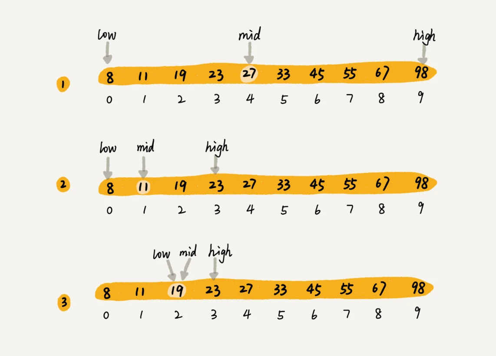
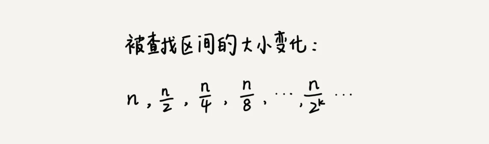

二分查找（Binary Search）
例：
假设有 10 个订单，订单金额分别是：8，11，19，23，27，33，45，55，67，98。是否存在金额等于 19 元的订单，如果存在，则返回订单数据，如果不存在则返回 null。

二分查找针对的是一个有序的数据集合，查找思想有点类似分治思想。每次都通过跟区间的中间元素对比，将待查找的区间缩小为之前的一半，直到找到要查找的元素，或者区间被缩小为 0。
时间复杂度
假设数据大小是 n，每次查找后数据都会缩小为原来的一半，也就是会除以 2。最坏情况下，直到查找区间被缩小为空，才停止。

这是一个等比数列，其中 n/2^k=1 时，k 的值就是总共缩小的次数。而每一次缩小操作只涉及两个数据的大小比较，所以，经过了 k 次区间缩小操作，时间复杂度就是 O(k)。通过 n/2k=1，可以求得 k=log2n，所以时间复杂度就是 O(logn)。
二分查找是时间复杂度为 O(logn) 的算法之一，除此之外还有堆、二叉树的操作等等，它们的时间复杂度也是 O(logn)。O(logn) 这种对数时间复杂度是一种极其高效的时间复杂度，有的时候甚至比时间复杂度是常量级 O(1) 的算法还要高效。
因为 logn 是一个非常“恐怖”的数量级，即便 n 非常非常大，对应的 logn 也很小。比如 n 等于 2 的 32 次方，大约是 42 亿。也就是说，如果在 42 亿个数据中用二分查找一个数据，最多需要比较 32 次。
用大 O 标记法表示时间复杂度的时候，会省略掉常数、系数和低阶。对于常量级时间复杂度的算法来说，O(1) 有可能表示的是一个非常大的常量值，比如 O(1000)、O(10000)。所以，常量级时间复杂度的算法有时候可能还没有 O(logn) 的算法执行效率高。指数时间复杂度的算法在大规模数据面前是无效的。
二分查找的递归与非递归实现
最简单的情况就是有序数组中不存在重复元素，在其中用二分查找值等于给定值的数据。
循环实现
// 二分查找 数组必须有序，不存在重复
// 二分查找 数组必须有序，不存在重复
const biaryFind = (arr, target) => {
const n = arr.length
if (!n) return -1
let low = 0, high = n - 1
while(low <= high) {
const mid = Math.floor((high + low) / 2)
if (target === arr[mid]) {
return mid
} else if (target < arr[mid]) {
high = mid - 1
} else {
low = mid + 1
}
}
return -1
}
const arr = [1, 4, 5, 6, 7, 8, 10, 11, 23, 42, 44, 54, 56, 77, 102]
console.log(biaryFind(arr, 10)); // 6
console.log(biaryFind(arr, 102)); // 14
console.log(biaryFind(arr, 1)); // 0容易出错的 3 个地方
- 循环退出条件: 是 low<=high，而不是 low
- mid的取值：实际上，mid=(low+high)/2 这种写法是有问题的。因为如果 low 和 high 比较大的话，两者之和就有可能会溢出。改进的方法是将 mid 的计算方式写成 low+(high-low)/2。更进一步，如果要将性能优化到极致的话，可以将这里的除以 2 操作转化成位运算 low+((high-low)>>1)，因为相比除法运算来说，计算机处理位运算要快得多
- low 和 high 的更新：low=mid+1，high=mid-1。注意这里的 +1 和 -1，如果直接写成 low=mid 或者 high=mid，就可能会发生死循环。比如，当 high=3，low=3 时，如果 a[3]不等于 value，就会导致一直循环不退出。
递归实现
const bSearch = (arr, target) => {
const n = arr.length
return bSearchInternally(arr, 0, n - 1, target)
}
const bSearchInternally = (arr, low, high, target) => {
if (low > high) return -1
const mid = low + ((high - low) >> 1)
if (arr[mid] === target) {
return mid
} else if (arr[mid] < target) {
return bSearchInternally(arr, mid + 1, high, target)
} else {
return bSearchInternally(arr, low, mid - 1, target)
}
}
const arr = [1, 4, 5, 6, 7, 8, 10, 11, 23, 42, 44, 54, 56, 77, 102]
console.log(bSearch(arr, 10)); // 6
console.log(bSearch(arr, 102)); // 14
console.log(bSearch(arr, 1)); // 0二分查找应用场景的局限性
1. 二分查找依赖的是顺序表结构，简单点说就是数组
二分查找算法需要按照下标随机访问元素，如果换成其他数据结构，比如链表，数组按照下标随机访问数据的时间复杂度是 O(1)，而链表随机访问的时间复杂度是 O(n)，用链表的话，二分查找的时间复杂就会变得很高。
2. 二分查找针对的是有序数据
如果数据没有序，需要先排序。排序的时间复杂度最低是 O(nlogn)。所以，如果针对的是一组静态的数据，没有频繁地插入、删除，可以进行一次排序，多次二分查找。这样排序的成本可被均摊，二分查找的边际成本就会比较低。
但是，如果数据集合有频繁的插入和删除操作，要想用二分查找，要么每次插入、删除操作之后保证数据仍然有序，要么在每次二分查找之前都先进行排序。针对这种动态数据集合，无论哪种方法，维护有序的成本都是很高的。
所以，二分查找只能用在插入、删除操作不频繁，一次排序多次查找的场景中。针对动态变化的数据集合，二分查找将不再适用。
3. 数据量太小不适合二分查找。
如果要处理的数据量很小，完全没有必要用二分查找，顺序遍历就足够了。比如在一个大小为 10 的数组中查找一个元素，不管用二分查找还是顺序遍历，查找速度都差不多。只有数据量比较大的时候，二分查找的优势才会比较明显。
例外情况：如果数据之间的比较操作非常耗时，不管数据量大小，都推荐使用二分查找。比如，数组中存储的都是长度超过 300 的字符串，如此长的两个字符串之间比对大小，就会非常耗时。需要尽可能地减少比较次数，而比较次数的减少会大大提高性能，这个时候二分查找就比顺序遍历更有优势。
4. 数据量太大也不适合二分查找
二分查找的底层需要依赖数组这种数据结构，而数组为了支持随机访问的特性，要求内存空间连续，对内存的要求比较苛刻。比如，有 1GB 大小的数据，如果希望用数组来存储，那就需要 1GB 的连续内存空间。
注意“连续”二字，也就是说，即便有 2GB 的内存空间剩余，但是如果这剩余的 2GB 内存空间都是零散的，没有连续的 1GB 大小的内存空间，那照样无法申请一个 1GB 大小的数组。而二分查找是作用在数组这种数据结构之上的，所以太大的数据用数组存储就比较吃力了，也就不能用二分查找了。